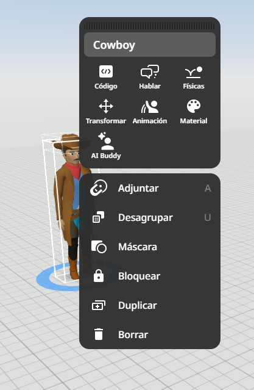

Al hacer clic derecho sobre cualquier personaje, objeto o bloque de tu escenario, se abrirá un menú desplegable dividido en dos secciones: Propiedades del elemento (iconos superiores) y Acciones de edición (lista inferior).

Sección Superior: Propiedades y Personalización- 💻 Código: Por defecto, los objetos están desactivados para la programación. Debes entrar aquí y activar la opción "Utilizar en CoBlocks" para que el personaje aparezca en tu panel de código y puedas darle vida.
- 💬 Hablar: Te permite escribir un texto estático en un bocadillo de diálogo (tipo cómic) que el personaje mostrará de forma permanente sobre su cabeza, ya sea pensando o hablando.
- 🤸 Físicas: Permite activar la gravedad, colisiones o el peso en el objeto para que actúe según las leyes de la física (por ejemplo, que caiga si está en el aire o que rebote).
- 📐 Transformar: Abre un panel numérico de precisión para cambiar la posición ($X, Y, Z$), la rotación o el tamaño exacto del objeto introduciendo los valores a mano.
- 🏃 Animación: Cambia la postura o acción del personaje. Puedes hacer que camine, corra, baile, salude, se siente o muestre emociones (alegría, enfado, tristeza).
- 🎨 Material: Sirve para personalizar el aspecto visual. Puedes cambiar el color de la ropa, de la piel, del pelo del personaje, o la textura de los bloques de construcción (madera, piedra, ladrillo, etc.).
- AI Buddy (Asistente IA): Una funcionalidad avanzada para configurar comportamientos o respuestas automáticas e inteligentes en el personaje.
Sección Inferior: Gestión y Edición del Entorno
- 🔗 Adjuntar: Sirve para "pegar" u acoplar un objeto a otro. Por ejemplo, si quieres ponerle un sombrero a un personaje o un vaso en su mano para que se muevan juntos.
- 📦 Desagrupar / Agrupar: Permite unir varios objetos independientes en un solo bloque (o separarlos) para moverlos, duplicarlos o escalarlos todos a la vez.
- Máscara: Permite ocultar partes visuales o recortar elementos según las necesidades del diseño.
- 🔒 Bloquear: Congela el objeto en su posición actual. Es muy útil para las paredes o el suelo, evitando que los muevas o selecciones por error mientras trabajas en otras cosas.
- ➕ Duplicar: Crea una copia idéntica del objeto con las mismas propiedades y tamaño de forma instantánea.
- Borrar: Elimina por completo el elemento seleccionado del escenario.